26/05/2023 — Bệnh nhân độ tuổi 20 quá liều verapamil rất lớn và sốc tim
Bản dịch tiếng Việt của bài "20-something with huge verapamil overdose and cardiogenic shock" – Dr. Smith’s ECG Blog. Giữ nguyên toàn bộ 14 hình ảnh của bản gốc.
Một bệnh nhân ở độ tuổi 20 nhập viện trong tình trạng sốc tim sau khi uống quá liều verapamil rất lớn.
Bệnh nhân đã được khám tại một cơ sở y tế bên ngoài và được dùng 6 g calci gluconat, KCl và truyền tĩnh mạch liên tục norepinephrine.
K ban đầu là 3,0 mEq/L và calci ion hóa là 5,5 mg/dL (xin lỗi các đồng nghiệp châu Âu vì đơn vị đo kỳ lạ)
Đây là điện tâm đồ đầu tiên tại khoa cấp cứu (ED):

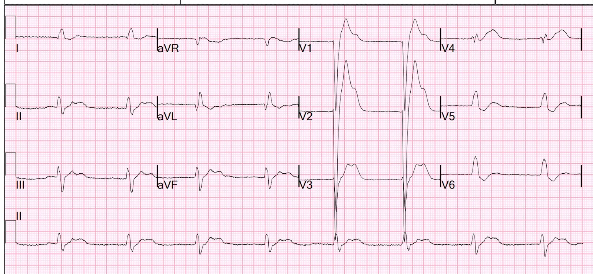
Có nhịp bộ nối với sóng P ngược dòng (xem chỗ lõm trên sóng T ở chuyển đạo II dọc phía dưới; bạn có thể dóng chỗ đó lên tất cả các chuyển đạo khác và thấy sóng P ngược dòng).
Ngoài ra còn có blốc nhánh trái (LBBB). Có ST chênh lên rất lớn, ngược hướng quá mức xét theo tỷ lệ. Có hình ảnh trông như sóng T tối cấp ở V4.
Điện tâm đồ này đáp ứng tiêu chuẩn Sgarbossa cải biên theo Smith, nhưng bối cảnh lâm sàng không phù hợp để chẩn đoán OMI!!
Nhân tiện, bot Queen of Hearts của PMcardio cho rằng đây Không phải OMI với độ tin cậy cao. Và bà ấy không hề biết đây là ca quá liều thuốc; bà ấy nghĩ đây là một bệnh nhân đau ngực!!

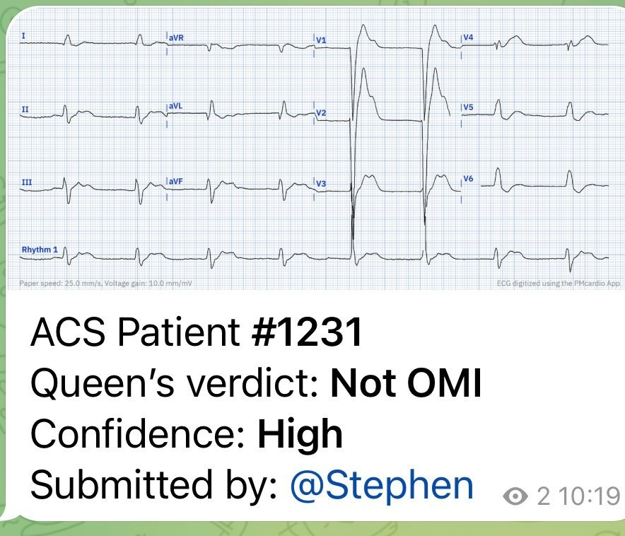
Ca bệnh tiếp diễn:
Bệnh nhân được ổn định bằng thêm calci, thuốc vận mạch và insulin liều cao. 3 giờ sau, điện tâm đồ này được ghi khi K là 2,8 mEq/L và calci toàn phần là 14,7 mg/dL:

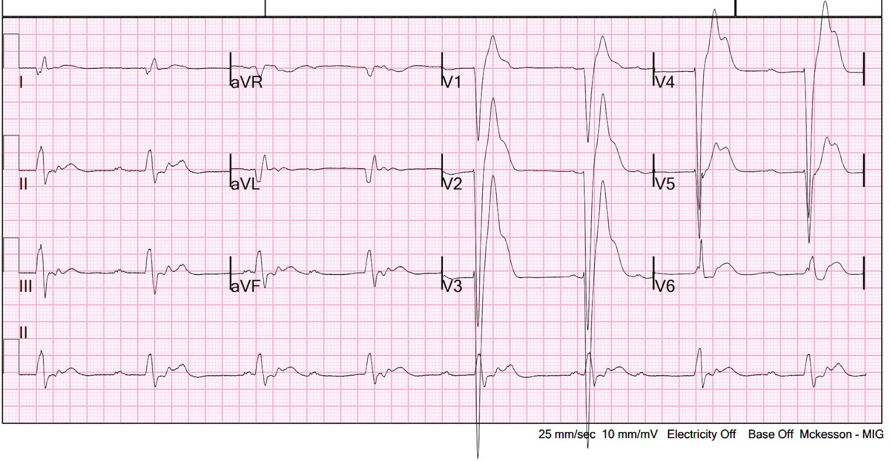
ST chênh lên rất lớn vẫn còn tồn tại.
Bệnh nhân được nhập đơn vị hồi sức tích cực (ICU) và không ổn định, trong tình trạng sốc, suốt đêm. Điện tâm đồ này được ghi lúc 8 giờ:

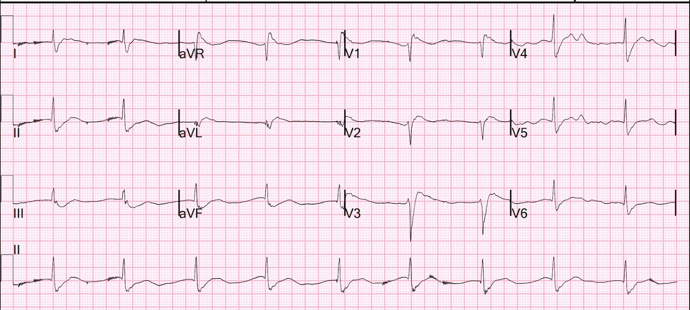
Lúc này ST chênh lên gần như đã hết
Một điện tâm đồ khác được ghi lúc 19 giờ:

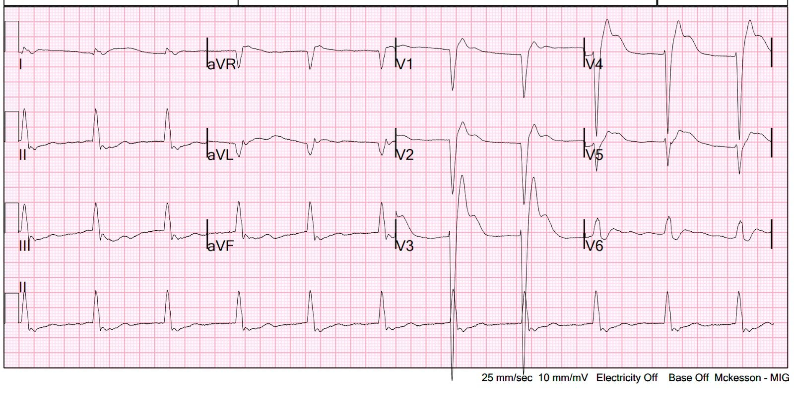
ST chênh lên đã quay trở lại!! Chuyện gì đang xảy ra ở đây?
Ca bệnh tiếp diễn
Bệnh nhân bị liệt mạch (vasoplegia) và được điều trị, ngoài insulin liều cao, bằng nhiều thuốc tăng co bóp cơ tim và thuốc vận mạch, thậm chí cả xanh methylen cho tình trạng liệt mạch.
Đây là một ca rất phức tạp và các chi tiết thì quá nhiều đối với một bài ECG Blog, nhưng chỉ cần nói rằng, ngay sau đó, bệnh nhân bị ngừng tim vô tâm thu và đã được hồi sức thành công. Bệnh nhân được đặt ECMO.
Troponin I đỉnh lúc 24 giờ là 480 ng/L.
Đánh giá: Mặc dù trên điện tâm đồ có vẻ như tổn thương rất lớn, ở đây không có OMI và chỉ có tổn thương cơ tim ở mức nhẹ.
Các điện tâm đồ tiếp theo khi đang chạy ECMO:
Điện tâm đồ lúc 36 giờ:

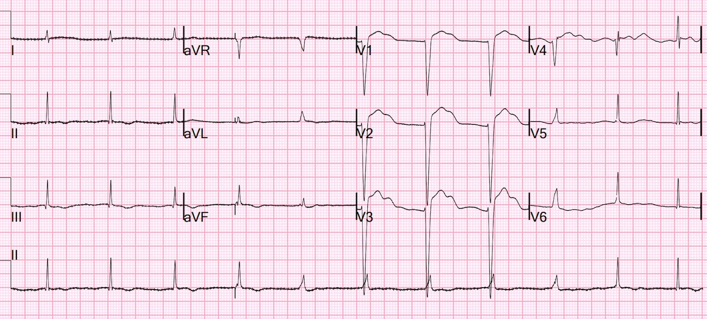
Nhịp bộ nối với QRS hơi rộng và ST-T kỳ dị
Lúc 48 giờ:

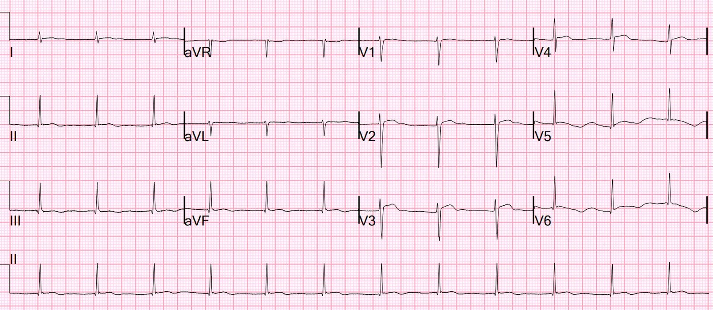
Nhịp bộ nối với ST-T bình thường hơn
Vào ngày thứ 4, trên siêu âm tim cơ tim đã co bóp bình thường hơn, và bệnh nhân đang được cai ECMO, với khám thần kinh bình thường. Đây là điện tâm đồ vào ngày thứ 4:

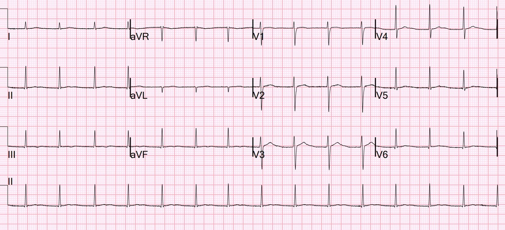
Nhịp bộ nối, ngoài ra chỉ bất thường rất ít.
Bệnh nhân được chuyển sang khoa tâm thần khi ra viện, chức năng thần kinh nguyên vẹn.
Bình luận về insulin liều cao và quá liều thuốc chẹn kênh calci
Tôi không có lời giải thích nào cho các bất thường ST-T ở đây. Quá liều verapamil rất phức tạp và CỰC KỲ nguy hiểm. Nó chủ yếu gây ức chế tim, và điều trị tình trạng này là insulin liều cao phối hợp với các thuốc tăng co bóp cơ tim khác. Mặc dù tác dụng chính là giảm tần số tim (anti-chronotropic) và giảm co bóp cơ tim (anti-inotropic), ở liều rất cao verapamil mất bớt tính đặc hiệu và còn có tác dụng gây liệt mạch (giãn mạch, làm giảm sức cản mạch hệ thống) tương tự các thuốc chẹn kênh calci nhóm dihydropyridin (như amlodipin), vốn chủ yếu gây giãn mạch và liệt mạch. Do đó, vì tác dụng có lợi chính của insulin liều cao (HDI) trong quá liều thuốc chẹn kênh calci là đóng vai trò một thuốc tăng co bóp cơ tim, nên nó không hiệu quả lắm đối với quá liều dihydropyridin. Làm vấn đề càng phức tạp hơn, bản thân HDI cũng có tác dụng giãn mạch!
Những điểm cần học:
1. Điện tâm đồ luôn phải được diễn giải trong bối cảnh lâm sàng. Nếu bối cảnh không phù hợp với tắc mạch vành cấp, thì các dấu hiệu trên điện tâm đồ có lẽ không phản ánh tắc mạch vành cấp.
2. Bệnh nhân bệnh nặng do bất kỳ nguyên nhân nào cũng có thể có điện tâm đồ rất bất thường

==================================
BÌNH LUẬN CỦA TÔI, bởi KEN GRAUER, MD (26/5/2023):
==================================
Ca hôm nay có nhiều câu hỏi hơn là câu trả lời. Dù vậy — tôi tin rằng vẫn còn một số điểm giảng dạy quan trọng cần nêu ra.
- Bệnh nhân hôm nay là một nam thanh niên nhập viện trong tình trạng sốc tim sau khi quá liều verapamil rất lớn. Xử trí ngộ độc thuốc chẹn kênh calci rất phức tạp — với trụy tim mạch, rối loạn dẫn truyền và nhiều loại rối loạn nhịp chậm (bao gồm cả cơn ngừng tim vô tâm thu mà bệnh nhân hôm nay đã trải qua) nằm trong số các vấn đề thường gặp. Chi tiết về xử trí vượt ra ngoài phạm vi của bài ECG Blog này — độc giả quan tâm có thể tham khảo các bài tổng quan của Atemnkeng và cs. (J Med Cases 12[9]:373-376, 2021) và của Chakraborty & Hamilton (StatPearls, 2023).
- Mặc dù có những thay đổi sóng ST-T bắt mắt xuất hiện rồi biến mất nhiều lần — vẫn không có tắc mạch vành cấp. Chúng tôi vẫn bối rối về nguyên nhân của những thay đổi điện tâm đồ đáng chú ý (và kỳ dị) này qua các bản ghi liên tiếp — với bài học MẤU CHỐT là “Điều trị vấn đề nguyên phát” (tức là cần can thiệp hướng chủ yếu vào việc hỗ trợ tim mạch trước tình trạng quá liều verapamil rất lớn). Thật đáng kinh ngạc, bệnh nhân này đã ổn định và hồi phục với chức năng thần kinh nguyên vẹn.
- Cuối cùng — tôi thấy các bản ghi liên tiếp trong ca hôm nay thú vị và minh họa cho toàn bộ phổ rối loạn nhịp và rối loạn dẫn truyền có thể gặp trong ngộ độc thuốc chẹn kênh calci do quá liều verapamil hoặc diltiazem. Tôi chỉ tập trung bình luận vào một vài khái niệm tinh tế trong nhận diện rối loạn nhịp — hoàn toàn ý thức rằng bản thân các rối loạn nhịp cụ thể trong ngộ độc thuốc chẹn kênh calci không cần điều trị riêng, ngoài việc hỗ trợ tim mạch. Như đã xảy ra trong ca hôm nay — các rối loạn nhịp và rối loạn dẫn truyền phần lớn đã hết khi bệnh nhân hồi phục và tác dụng của ngộ độc verapamil qua đi (ngoại trừ nhịp bộ nối ổn định huyết động, dù hơi gia tốc, với QRS hẹp trên điện tâm đồ cuối cùng lúc ra viện).
==============================================
— BẠN có nhận ra Rối loạn Nhịp trên Điện tâm đồ thứ 2 của ca hôm nay?
THỬ THÁCH:
Hãy NHÌN lại 2 bản ghi đầu tiên trong ca hôm nay. Để rõ ràng, trong Hình 1 — tôi đã sao lại và đặt 2 điện tâm đồ đầu tiên này cạnh nhau.
- Bạn thấy những tác dụng nào của ngộ độc verapamil trên 2 bản ghi này?
- Nhịp là gì trên điện tâm đồ #2?

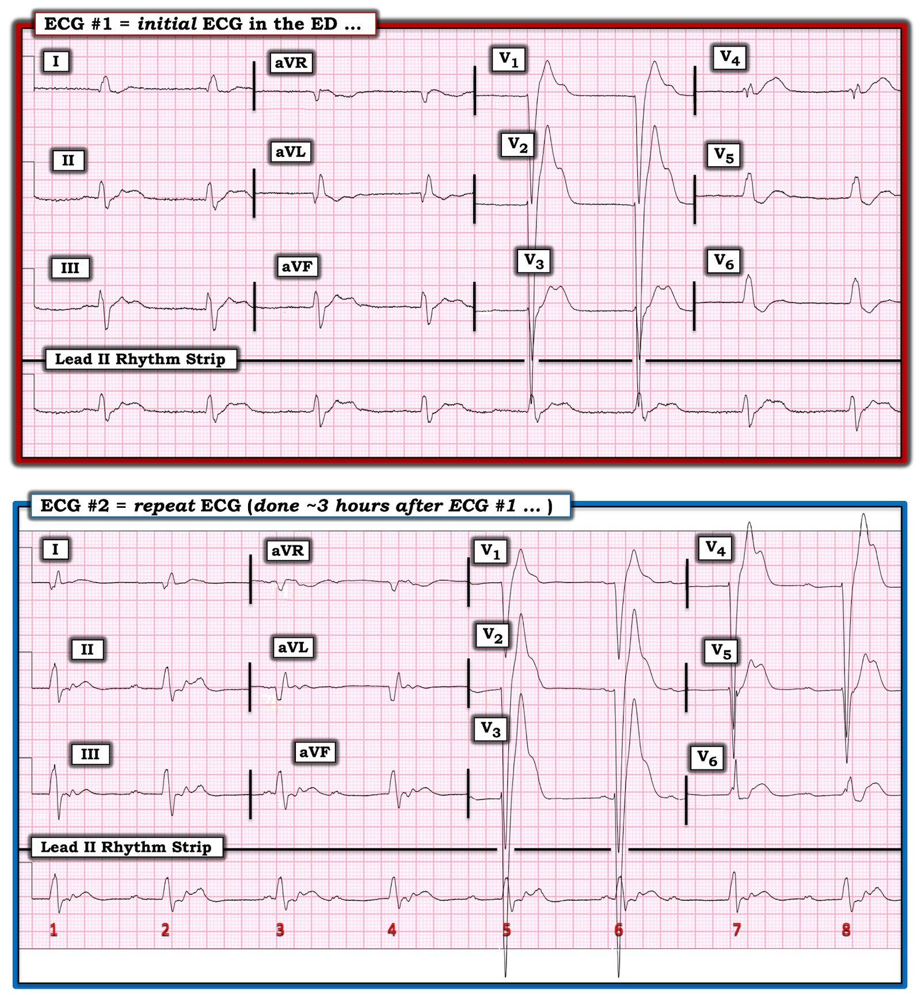
SUY NGHĨ CỦA TÔI về THỬ THÁCH:
Như BS. Smith đã nêu ở trên — nhịp trên điện tâm đồ #1 có vẻ là nhịp thoát bộ nối đều với tần số ~50/phút (tức là, với khoảng R-R đều, có độ dài gần như đúng bằng 6 ô lớn).
- Không có sóng P xoang bình thường. Phức bộ QRS rộng — với hình dạng QRS phù hợp với LBBB. Mặc dù khó xác định chỉ dựa vào điện tâm đồ ban đầu này — sau khi xem xét điện tâm đồ #2, tôi không nghĩ là có sóng P ngược dòng.
BẠN có thấy sóng P trên điện tâm đồ #2 không?
- Nếu có — Các sóng P này có đều không?
TRẢ LỜI: Có sóng P trên điện tâm đồ #2 không?
- Tôi đã minh họa câu trả lời cho câu hỏi này trong Hình 2.

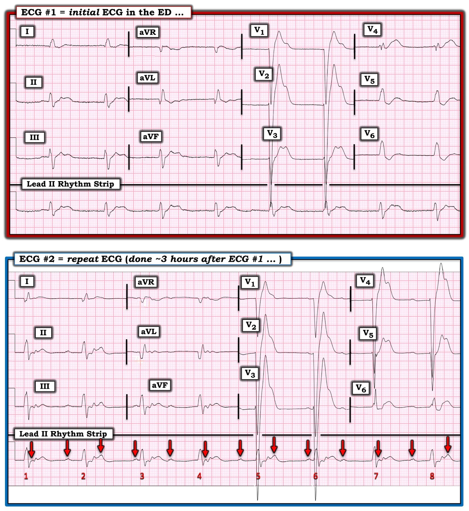
LƯU Ý: Lý do tôi không nghĩ có sóng P ngược dòng trên điện tâm đồ #1 — là vì phần cuối QRS và sóng ST-T trên điện tâm đồ #1 trông giống với phần cuối QRS và sóng ST-T của các nhát #3 và 6 trên điện tâm đồ #2, và điều đó sẽ không xảy ra nếu có sóng P ngược dòng ẩn ở đó (tức là, sóng P ngược dòng ẩn sẽ làm xáo trộn tính đều của các sóng P có mũi tên ĐỎ).
CÂU HỎI:
- Các sóng P có mũi tên ĐỎ trong Hình 2 có liên quan đến các phức bộ QRS kế cận không?
TRẢ LỜI:
Trong Hình 3 — tôi đã mã hóa màu các sóng P trên dải nhịp chuyển đạo II dài của điện tâm đồ #2.
- Tất cả các sóng P cùng màu trong Hình 3 có điểm gì chung?

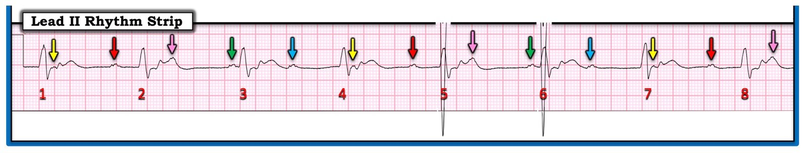
Các sóng P được mã hóa màu như thế nào?
Cách dễ nhất để xác lập các mối liên quan mà tôi nêu dưới đây là dùng compa đo (calipers).
- Như đã nêu — sóng P trong Hình 3 khá đều với tần số ~75/phút (khoảng P-P vẫn gần bằng 4 ô lớn trong suốt dải nhịp này).
- Phức bộ QRS trong Hình 3 vẫn rộng, với hình dạng LBBB (như chúng ta đã thấy trước đó ở điện tâm đồ 12 chuyển đạo trình bày trong Hình 2).
- Nhịp thất trong Hình 3 đều (Regular) một cách đáng ngạc nhiên, với khoảng R-R = 6.5 ô lớn. Điều này tương ứng với tần số (Rate) thất ~46/phút trên dải nhịp chuyển đạo II dài của điện tâm đồ #2, tức là chậm hơn một chút so với tần số thất của điện tâm đồ #1.
- Điểm MẤU CHỐT: Mỗi sóng P được đánh dấu bằng mũi tên màu trong Hình 3 — dường như đều có liên quan (Related) với phức bộ QRS kế cận, hoặc qua một khoảng PR hằng định so với QRS đi sau — hoặc — qua một khoảng RP’ hằng định so với QRS đi trước. Ví dụ — khoảng PR của 3 sóng P mũi tên ĐỎ bị kéo dài, và có vẻ có cùng thời gian ( = 0.38 giây).
ĐIỀU CỐT LÕI: Khác với 6 bản ghi liên tiếp còn lại trong ca hôm nay — có các sóng P xoang khá đều trong điện tâm đồ #2. Việc dường như có các khoảng PR lặp lại thì khó là do ngẫu nhiên — mà thay vào đó gợi ý rằng ít nhất đã có một phần xung động xoang được dẫn truyền vào thời điểm ghi điện tâm đồ #2.
- Điều này phù hợp với biểu hiện trên điện tâm đồ của ngộ độc verapamil — vốn được biết là gây ra rối loạn dẫn truyền (như LBBB thấy ở các bản ghi trước đó trong ca hôm nay) — và — bất kỳ loại nào trong số các rối loạn nhịp chậm khác nhau đã thấy trên các điện tâm đồ liên tiếp hôm nay (tức là, nhịp chậm, nhịp thoát bộ nối, blốc AV — và cơn ngừng tim vô tâm thu mà bệnh nhân hôm nay đã được hồi sức thành công).
Minh họa bằng giản đồ bậc thang:
Cơ chế blốc AV trong điện tâm đồ #2 rất phức tạp. Tôi nghi ngờ có Wenckebach hai tầng ở đường ra khỏi nút AV — như được thể hiện qua giản đồ bậc thang (laddergram) mà tôi đề xuất và đã vẽ trong Hình 3 (Để tìm hiểu thêm về cơ chế blốc AV hai tầng — BẤM VÀO ĐÂY).
- Thừa nhận: Tôi không thể chắc chắn về cơ chế tôi đã vẽ trong Hình 3. Tôi thậm chí còn không biết điện giải đồ huyết thanh vào thời điểm ghi bản ghi này (tức là, Nếu có tăng kali máu — rối loạn điện giải này nổi tiếng là gây ra những dạng blốc AV rất bất thường). Ngoài ra — lý tưởng là tôi muốn có một khoảng thời gian theo dõi dài hơn để thực sự bảo đảm tính xác thực của những gì có vẻ là các khoảng PR và RP’ lặp lại mà cách đánh dấu màu của tôi gợi ý.
- NHỮNG ĐIỂM CẦN HỌC: Cơ chế cụ thể mà tôi đã vẽ ra thì kém quan trọng hơn nhiều — so với lời nhắc rằng rất DỄ bỏ sót hoạt động nhĩ và các dạng rối loạn dẫn truyền AV tinh tế. Cách để phòng tránh điều này — là phải có hệ thống và luôn luôn dành 3–5 giây cần thiết để “con mắt được rèn luyện” của bạn bắt đầu đọc mọi bản ghi bạn gặp — bằng cách nhìn vào dải nhịp chuyển đạo dài đi kèm bản ghi 12 chuyển đạo — để đánh giá tính đều, sự hiện diện (hoặc vắng mặt) của hoạt động nhĩ — và nếu có sóng P, thì chúng có (hay không) liên quan với các phức bộ QRS kế cận.
- Cơ chế tôi đề xuất trong giản đồ bậc thang ở Hình 4 rất phức tạp. Nhưng không cần dựng được cơ chế này mới nhận ra khả năng có một dạng blốc độ 2 nào đó, bởi vì: i) Có nhịp xoang nền (tức là, các sóng P mũi tên khá đều); và, ii) Dường như có các khoảng PR lặp lại, đặc biệt khi có blốc AV độ 1 ở các nhát được dẫn truyền (sóng P mũi tên ĐỎ) — điều này thường gợi ý dẫn truyền kiểu Wenckebach dưới một dạng nào đó — dù là qua đường dẫn truyền kép trong nút AV (do khoảng PR dẫn truyền tăng rõ rệt giữa các nhát) hay qua dẫn truyền Wenckebach hai tầng ở đường ra khỏi nút AV (theo giản đồ bậc thang tôi đề xuất).
- XIN NHẤN MẠNH: Cơ chế của nhịp trong điện tâm đồ #2 không quan trọng đối với việc xử trí ca hôm nay. Thay vào đó — mấu chốt là điều trị hỗ trợ, với điều trị nhắm vào vấn đề nguyên phát ( = ngộ độc verapamil). Dù vậy — có những lúc mà Điểm cần học hôm nay về việc thường xuyên dùng cách tiếp cận hệ thống khi đọc nhịp sẽ tạo ra khác biệt lớn về mặt lâm sàng! (tức là, Xem Bình luận của tôi trong bài ngày 6 tháng Tư năm 2023 trên Dr. Smith’s ECG Blog — trong đó AFib và Wenckebach AV đã nhiều lần bị nhiều nhân viên y tế đọc sai trong suốt nhiều tháng, với những hệ quả hiển nhiên đối với việc ra quyết định điều trị tối ưu).

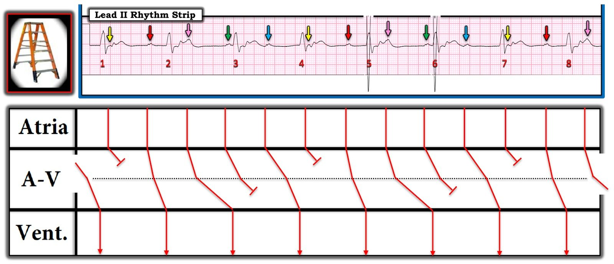
PHẦN BỔ SUNG của Ken Grauer, MD (27/5/2023):
Tôi rất vui khi nhận được email từ Dr. H.S. Cho (ở Seoul, Hàn Quốc) — về cơ chế của nhịp trên dải nhịp chuyển đạo II dài của điện tâm đồ #2.
- Mối băn khoăn của Dr. Cho có hai điểm: i) Các khoảng mà tôi đánh dấu màu không thật sự bằng nhau; và, ii) Khoảng R-R trong bản ghi này hằng định — trong khi thông thường khi có dẫn truyền Wenckebach, khoảng R-R sẽ cho thấy “nhịp theo nhóm” với một kiểu thay đổi các khoảng, trong đó manh mối TỐT NHẤT cho thấy một nhát ĐANG được dẫn truyền là khi xuất hiện một khoảng R-R “ngắn hơn dự kiến”.
- Mặc dù ban đầu tôi đã tin chắc vào cơ chế tôi đề xuất trong giản đồ bậc thang ở Hình 4 — nhưng ở lần “xem lại” không biết thứ bao nhiêu của bản ghi này (trước khi tôi đăng bình luận của mình) — tôi cũng đã có những băn khoăn y hệt mà Dr. Cho đã nêu ra rất tinh tường. Chính vì lý do này mà tôi đã tỉ mỉ điều chỉnh cách diễn đạt trong bình luận của mình. Bạn sẽ thấy rằng tôi đã viết một mục “Thừa nhận“ trong bình luận ban đầu, trong đó nói — “Tôi không thể chắc chắn về cơ chế tôi đã vẽ trong Hình 3.”
ĐIỀU CỐT LÕI: Tôi ĐỒNG Ý với Dr. Cho. Giản đồ bậc thang tôi đề xuất có thể không đúng.
- Chênh lệch về số đo các khoảng mà tôi tính được thì nhỏ hơn số đo của Dr. Cho. Tôi nghĩ lý do có thể là những khác biệt rất nhỏ về hình dạng của các sóng P biên độ thấp, và về độ dốc khởi đầu của QRS — đó là lý do tôi đã viết trong mục Thừa nhận của mình, “lý tưởng là tôi muốn có một khoảng thời gian theo dõi dài hơn để thực sự bảo đảm tính xác thực của những gì có vẻ là các khoảng PR và RP’ lặp lại mà cách đánh dấu màu của tôi gợi ý.”
- Việc phân biệt giữa blốc AV độ 2 và blốc AV độ 3 đôi khi khá khó — đặc biệt khi tỷ lệ giữa khoảng P-P và khoảng R-R khiến nó mô phỏng rất sát một khoảng thời gian lặp lại.
- Sẽ không phải lúc nào cũng có thể chắc chắn 100% về căn nguyên của một rối loạn nhịp chỉ từ một “ảnh chụp nhanh” duy nhất mà ta có được từ một dải nhịp 10 giây. Điều này chắc chắn đúng trong ca hôm nay — trong đó tác động của ngộ độc verapamil liều cực lớn đã gây xáo trộn sự hình thành xung động tim và các đặc tính của hệ thống dẫn truyền, rõ ràng là “không tuân theo các quy luật thông thường”.
- Dù vậy, trong khi tôi vẫn giữ khả năng có Wenckebach hai tầng — thì khoảng R-R hằng định lại phù hợp hơn với cách đọc của Dr. Cho là blốc AV hoàn toàn.
Xin một lần nữa NHẤN MẠNH: Tôi hoan nghênh những băn khoăn của Dr. Cho! Thảo luận về những khía cạnh thú vị của việc đọc rối loạn nhịp luôn bổ ích và mang tính giáo dục cho cả hai bên. Nhưng như trong Những điểm cần học của ca hôm nay — các chi tiết cụ thể của nhịp hấp dẫn trong điện tâm đồ #2 đã không làm thay đổi việc xử trí bệnh nhân ngộ độc verapamil liều cực lớn này. Đúng như dự kiến, rối loạn nhịp và tình trạng QRS giãn rộng đã hết khi tác dụng của verapamil mất đi (ngoại trừ nhịp bộ nối hơi gia tốc vào thời điểm bệnh nhân ra viện).
- Không phải lúc nào việc nhận ra đúng nhịp cũng cần cho điều trị tối ưu.
- Dù vậy, với tư cách một người giảng dạy điện tâm đồ lâm sàng — tôi cảm thấy việc thấu hiểu các khái niệm đã bàn trong ca hôm nay về nhịp trong điện tâm đồ #2 sẽ hữu ích cho việc xử trí rối loạn nhịp tối ưu trong một số trường hợp (như bài ngày 6 tháng Tư năm 2023 mà tôi đã dẫn link ở trên) — trong đó việc chú ý đọc chính xác rối loạn nhịp ĐÃ đóng vai trò then chốt đối với xử trí tối ưu.
Một lần nữa XIN CẢM ƠN Dr. Cho vì những nhận xét của anh!